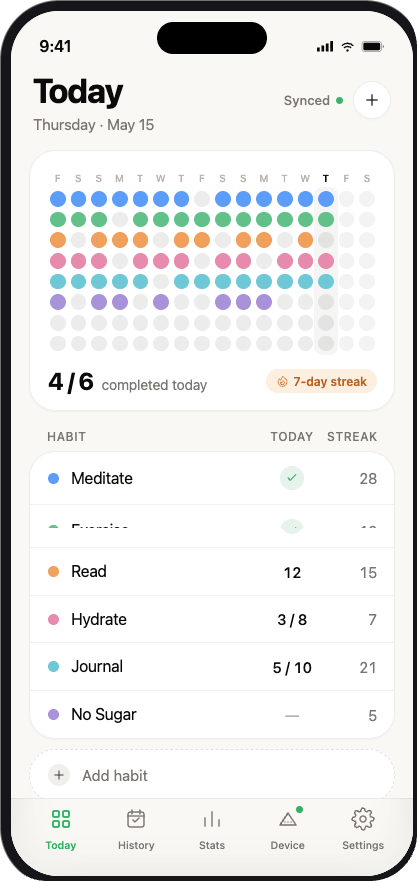

Local Bluetooth
Habit history, colors, brightness, clock mode and its sleep schedule travel directly from your iPhone to mini.

Your habits deserve a place in your day.
A small desk display that turns the last eight days into light.
First batch of ten. Hand assembled in Germany.
Complete a habit in the Ritlum app. A new light appears on mini, keeping your progress in view long after you put your phone down.
Watch today’s column fill, one habit at a time.



By your books. Beside your morning coffee. Somewhere you’ll see the small things adding up.
Eight rows for your habits. Eight columns for your recent days. A soft, quiet reminder to keep showing up.
Make room for mini
When you are not looking back at your progress, mini becomes a softly lit blue pixel clock. On its compact 8 × 8 display, the time moves gently across the grid.
Set clock mode in the Ritlum app. Once the time is synced, mini keeps it running locally while it stays powered.
Mini talks directly to the Ritlum app. Your desk display does not need its own account, Wi-Fi connection or cloud service to keep doing its job.
Habit history, colors, brightness, clock mode and its sleep schedule travel directly from your iPhone to mini.
Your last display and settings are stored on mini. Unplug it and it returns to the same habit view when it powers back up.
When new firmware is available, the Ritlum app downloads it and installs it on mini over Bluetooth.
Link an NFC tag to a habit in the Ritlum app. Tap the tag with your iPhone to log it; when mini is connected nearby, the matching row updates over Bluetooth.
The tag is read by your iPhone. Mini becomes the quiet, visible reward.

This first batch is intentionally small. Ten PLA cases are 3D printed and every unit is assembled by hand—a useful object with the honest character of a small production run.

A first run of ten, 3D printed and hand assembled in Germany. Leave your email for first-batch ordering details.
Register your interest. No payment is taken here.